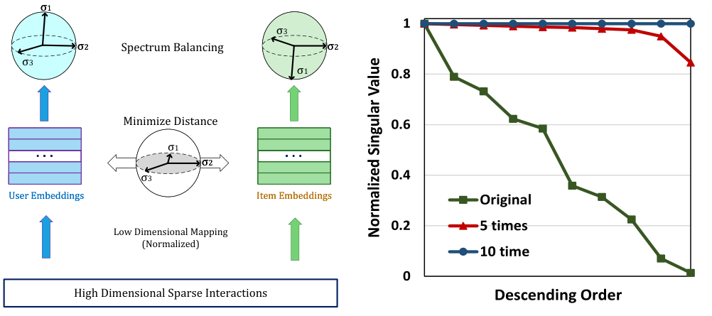

Balancing Embedding Spectrum for Recommendation (面向推荐的嵌入谱均衡)
- 会议/期刊: ACM Transactions on Recommender Systems (TORS)
- 作者与机构: Shaowen Peng (NAIST), Kazunari Sugiyama (大阪成蹊大学), Xin Liu (AIST), Tsunenori Mine (九州大学)
- 推荐链路定位: 召回（表征学习层，可插拔于 MF / LightGCN 编码器）
- 研究方向: 协同过滤与双塔召回 / 自监督对比学习与交互去噪
- 论文原文: https://arxiv.org/abs/2406.12032v2
- 开源代码: https://github.com/tanatosuu/directspec
TL;DR (1分钟核心速览)
本文指出成对学习范式存在嵌入坍缩：正样本对齐等价于低通滤波，使用户/物品嵌入坍缩到常数向量（完全坍缩）；负采样仅充当高通滤波，且效果受限于特定损失（不完全坍缩）。作者从谱分布视角提出 DirectSpec——以全通滤波直接均衡嵌入矩阵奇异值谱，并给出自适应版本 DirectSpec+。在 3 个数据集、80/20 随机划分 + 全库排序协议下，DirectSpec+ 在 MF 与 LightGCN 上相对 BPR/LightGCN 的 nDCG@10 最高提升 52.6% / 42.4%。
Background & Motivation (背景与核心矛盾)
- 主流范式: 以 MF 及其变体（GNN、MLP、Transformer）为代表，将高维稀疏交互矩阵映射到 \(d\) 维嵌入，用 BPR/BCE 等成对损失优化正负样本。
- 前人局限: (i) 仅优化正样本对齐时，梯度更新等价于低通滤波 \((I+\alpha A)^l\)，\(l\)增大后\(\text{rank}(H)\to 1\)，嵌入完全坍缩；(ii) 负采样虽能延缓坍缩，但梯度消失（\(\sigma(\hat r)\to 1\)）使高通滤波失效，有效秩仍收敛到远小于\(d\) 的值，形成不完全坍缩。
- 核心洞察 (Key Insight): 坍缩程度与嵌入矩阵的奇异值分布直接相关——完全坍缩时单一奇异值主导，充分利用空间时奇异值均匀分布。作者用有效秩 \(\text{erank}(H)=\exp(H(p_1,\dots,p_d))\) 量化该现象，并证明 Barlow Twins、LogDet、SCL 等无负采样 SSL 方法均是 DirectSpec 框架的特例。
- 本文切入点: 不再依赖正/负样本的隐式滤波效应，而是显式直接优化谱分布，充当"全通滤波"确保所有维度均衡贡献。
Method (核心方法设计)
1. 整体框架 (Overall Architecture)
模型在标准 CF 编码器（MF 或 LightGCN）输出嵌入 \(H\)后，插入一个谱均衡层：每个 batch 内对用户/物品嵌入做行归一化，再执行一次谱均衡更新\(H\leftarrow H-\alpha(HH^\top)^{K-1}H\)，随后照常计算 BPR/BCE 对齐损失并反传。该层无需显式采样负样本，可视为即插即用的"谱归一化"模块，训练与推理均不改变原有打分函数\(\hat r_{ui}=h_u^\top h_i\)。
flowchart TD
A["稀疏交互矩阵 R"] --> B["编码器 MF / LightGCN"]
B --> C["嵌入矩阵 H (行归一化)"]
C --> D["谱均衡层 H←H-α(HHᵀ)^(K-1)H"]
D --> E["对齐损失 BPR/BCE"]
E --> F["内积打分 Top-K 召回"]
2. 关键设计拆解 (Key Designs)
- DirectSpec：拉格朗日视角下的谱均衡算子：目标是让奇异值均匀分布，构造 \(\mathcal{L}=f(\sigma_1,\dots,\sigma_d)+\beta(\sqrt{\sum_i\sigma_i^2}-c)\)，在\(g_i(\cdot)\)同构时最优解为\(\sigma_1=\cdots=\sigma_d=c/\sqrt d\)。取\(f=\sum_i\sigma_i^{2K}\)并利用\(\mathrm{Tr}((HH^\top)^K)=\sum_i\sigma_i^{2K}\)，对\(H\) 求导得闭式更新：
其 SVD 形式为 \(P\,\mathrm{diag}(\sigma_i(1-\alpha\sigma_i^{2K}))Q^\top\)——大奇异值被乘以更小权重，从而压平谱分布；行归一化天然满足\(\sum_i\sigma_i^2=d\)的约束，无需额外投影。取\(K=1\)时复杂度仅\(O(B^2d)\)（\(B\) 为 batch size），与用户/物品规模无关。
- DirectSpec+：个体化自适应均衡：DirectSpec 对所有样本对施加同一强度 \(\alpha\)，但"谱均衡"与"正样本对齐"本质矛盾（Proposition 5：完美均衡要求同一物品与两个正交用户同时平行，欧氏空间不可能）。DirectSpec+ 将标量\(\alpha\) 替换为 softmax 个体化系数：
其中温度 \(\tau_{ij}\)由无参数多项式图滤波\(\phi(\cdot)=\sum_{l=0}^{L}\hat A^l\)的余弦相似度线性映射到\([\tau_0,\tau_1]\)：坍缩更严重（内积趋近 1）的样本对获得更高均衡强度，图上关系更近的未观测对则降低强度。实验表明静态温度显著优于可学习注意力温度（数据稀疏下难以学出关系）。
- 训练目标、负采样与推理效率：总损失为原对齐损失（BPR/BCE）叠加谱均衡层，无需负采样。训练每 epoch 耗时：DirectSpec+(MF) 约为 BPR 的 1.44–1.59 倍，DirectSpec+(LightGCN) 仅 1.02–1.08 倍；但因收敛更快（Gowalla 上 80/60 epoch vs. BPR/LightGCN 的 250/600），整体训练加速 2.2× / 9.8×，且显著优于 SGL-ED（4–5 倍开销）。
Experimental Setup & Evaluation Protocol (实验设置与评估协议)
- 数据集与预处理: 三个公开数据集，移除评论/标签/地理等辅助信息，显式评分二值化为 0-1 隐式反馈：
| 数据集 | #Users | #Items | #Interactions | 密度 | 场景说明 |
|---|---|---|---|---|---|
| CiteULike | 5,551 | 16,981 | 210,537 | 0.223% | 学术论文收藏 |
| Yelp | 25,677 | 25,815 | 731,672 | 0.109% | POI 点评 |
| Gowalla | 29,858 | 40,981 | 1,027,370 | 0.084% | 位置签到 |
- 数据划分与防穿越: 比例划分——80% 训练、20% 测试，并从训练集随机抽 10% 作验证集调参；报告测试集平均精度。
- 排名评测协议: 对未交互物品排序截断 Top-\(k\)，指标为 Recall@{10,20} 与 nDCG@{10,20}（原文未明确全库/采样，按 CF 惯例为全库未交互排序）。
- 对比基线与超参设置: 基线含 BPR、ENMF-U、CCL、DirectAU、LightGCN、SGL-ED、LightGCL、GDE、LogDet、AFDGCF；嵌入维度 \(d=64\)，batch size 256，正则 0.01，Xavier 初始化，SGD 优化；显著性用单尾 t 检验\(p<0.01\)（表中
*）。
Key Experimental Results (实验关键数据)
1. 主实验对比 (Main Results)
| 数据集 | 方法 | nDCG@10 | nDCG@20 | Recall@10 | Recall@20 |
|---|---|---|---|---|---|
| CiteULike | BPR | 0.1620 | 0.1773 | 0.1778 | 0.2190 |
| DirectAU(MF) | 0.2102 | 0.2252 | 0.2260 | 0.2693 | |
| LightGCL | 0.2096 | 0.2238 | 0.2214 | 0.2638 | |
| DirectSpec+(MF) | 0.2197* | 0.2354* | 0.2352* | 0.2818* | |
| DirectSpec+(GCN) | 0.2038 | 0.2213 | 0.2213 | 0.2704 | |
| Yelp | BPR | 0.0487 | 0.0583 | 0.0607 | 0.0869 |
| DirectAU(MF) | 0.0721 | 0.0848 | 0.0872 | 0.1219 | |
| LogDet | 0.0711 | 0.0833 | 0.0863 | 0.1203 | |
| DirectSpec+(GCN) | 0.0745* | 0.0868* | 0.0909* | 0.1252* | |
| Gowalla | BPR | 0.1164 | 0.1255 | 0.1186 | 0.1483 |
| LightGCL | 0.1368 | 0.1482 | 0.1436 | 0.1801 | |
| SGL-ED | 0.1343 | 0.1462 | 0.1417 | 0.1779 | |
| DirectSpec+(GCN) | 0.1405* | 0.1518* | 0.1467* | 0.1837* |
相对提升：DirectSpec+(MF) 较 BPR 平均 nDCG@10 +35.8%，DirectSpec+(GCN) 较 LightGCN +33.1%；单数据集最高为 Yelp 上 +52.6%（MF）与 +42.4%（GCN）。
2. 消融实验 (Ablation Study)
| 配置 | CiteULike nDCG@10 | Yelp nDCG@10 | Gowalla nDCG@10 | 说明 |
|---|---|---|---|---|
| BPR / LightGCN（无均衡） | 0.1620 / 0.1610 | 0.0487 / 0.0572 | 0.1164 / 0.0987 | 不完全坍缩 |
| DirectSpec(MF/GCN) | 0.1688 / 0.1693 | 0.0689 / 0.0712 | 0.1133 / 0.1160 | 全局统一强度 \(\alpha\) |
| DirectSpec+(MF/GCN) | 0.2197 / 0.2038 | 0.0743 / 0.0745 | 0.1389 / 0.1405 | 个体化温度 |
| DirectSpec+ 动态温度（注意力） | 0.1593 | 0.0485 | 0.1126 | 显著劣于静态温度 |
| LogDet（谱均衡特例） | 0.1403 | 0.0711 | 0.1179 | 均衡过度、精度早降 |
| AFDGCF（Barlow Twins 特例） | 0.1619 | 0.0585 | 0.1011 | 对 \(\alpha\) 不敏感 |
3. 关键实验发现 (Key Findings)
- 坍缩越重、收益越大：Yelp 坍缩最严重（erank 收敛最低），DirectSpec 平均提升 33.0%；CiteULike 坍缩最轻，仅提升 4.7%——提升幅度与数据集坍缩程度严格正相关，验证了方法的因果归因。
- 完美均衡并非最优：随 \(\alpha\)增大，erank 单调升至接近\(d\)，但 nDCG@10 先升后降（CiteULike 最优\(\alpha=1.1\)、Yelp\(\alpha=0.6\)，对应 erank≈62.9 而非 64），证明"对齐 vs. 谱均衡"的 trade-off 才是关键；DirectSpec+ 在 erank=63.77 处取得优于 LogDet（erank=61.64 即开始下降）的精度。
- 负采样无法根治坍缩：仅用负样本优化时，BCE(MF) 的 erank 随负采样比 \(N\) 增大反而下降更快（完全坍缩），而 DirectSpec 的 erank 全程稳定；先用 BCE 训练 50 epoch 再用 DirectSpec，可将已坍缩嵌入"救回"，说明 DirectSpec 是全通滤波而非仅抵消低通效应。
Highlights & Limitations (亮点、对比与审稿批判)
- 与代表作对比 (vs. Prior Work): 相较 DirectAU（直接优化 alignment + uniformity），本文从谱分布给出统一理论框架，且 DirectAU 无法解释为何 uniformity 有效；相较 LogDet / AFDGCF（Barlow Twins 系），本文证明二者是 DirectSpec 的 \(f\)取特定形式的特例，且 DirectSpec+ 以\(O(B^2d)\) 复杂度实现更优的均衡-对齐 trade-off；相较 DropEdge 等过平滑解法，本文指出其只缓解图谱侧坍缩，无法处理优化过程导致的通用坍缩。
- 可迁移亮点: (i) 谱均衡层可即插即用地加在任何 embedding-based 召回模型（双塔、GNN、序列编码器）输出端，无需负采样；(ii) 用有效秩 erank 作为训练监控指标，可低成本诊断表征退化。
- 审稿级局限批判: (i) 需调 \(\alpha\)、\(\tau_0\)、\(\tau_1\)、\(L\)等多个超参，且\(\tau_0\) 在稠密数据上收益不显著、跨数据集敏感；(ii) 评测仅限三个中小规模隐式反馈数据集与随机比例划分，缺少全库排序协议明示、冷启动/长尾分桶与线上 A/B 验证，工业可扩展性证据不足。
Rating (四维评分)
- 方法创新性 (Novelty): ⭐⭐⭐⭐⭐ （从谱分析统一解释坍缩机理，并将 Barlow Twins/LogDet/SCL 纳入同一框架，理论贡献扎实）
- 评估协议与实验扎实度 (Protocol & Experiments): ⭐⭐⭐⭐ （三数据集 + 10 个 SOTA 基线 + 显著性检验 + 效率对比完整，但缺全库排序明示与分桶分析）
- 写作与数学规范度 (Clarity & Rigor): ⭐⭐⭐⭐⭐ （Proposition 1–6 层层递进，SVD 推导与复杂度分析清晰，符号统一）
- 工业落地与复现价值 (Industrial & Practical Value): ⭐⭐⭐⭐ （代码开源、即插即用、训练加速 2.2–9.8×，但超参调优成本与大规模验证仍是落地门槛）